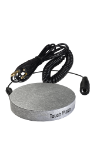
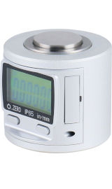
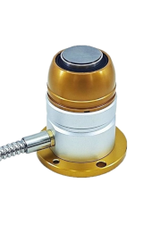
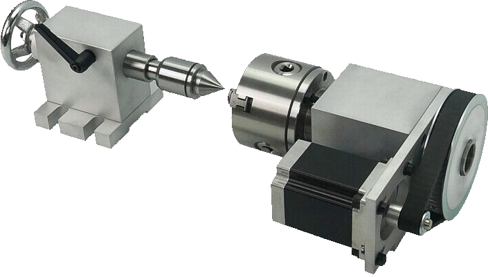
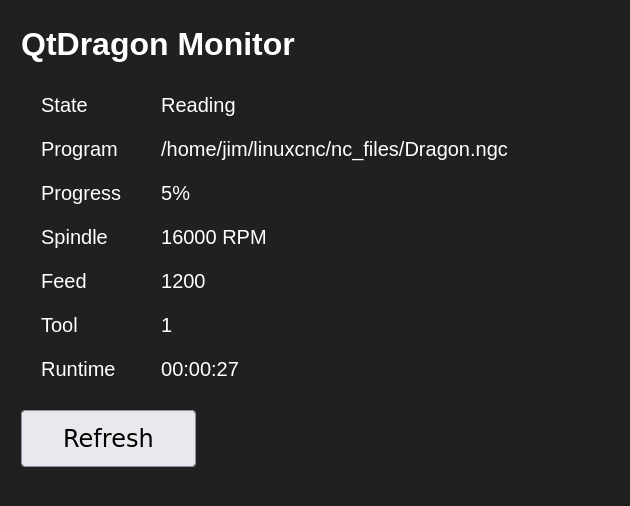

The QtDragon interface allows for the use of an external Manual Pulse Generator (MPG) by checking the Enable MPG Jogging checkbox on the SETTINGS page.
A separate HAL file is used to define I/O pins that connect to the MPG and the qtdragon_postgui.hal is used to make the connections to the QtDragon HAL pins.
Four HAL input pins are created to connect the MPG selected axis signals to the Jog joypad highlight segments to indicate which axis is being jogged with the MPG.
A HAL float input pin is created to allow the handler file to display the currently selected jog scale setting of the MPG. Connections from the MPG to a mux4 HAL component are made in a mpg.hal file and the output of the mux4 is connected to QtDragon in order to display the currently selected MPG jog increment. If the MPG's pulse outputs are quadrature encoded, the scale value inputs to the MUX4 component should be the desired step size divided by 4.
A HAL output pin is created to disable the MPG encoder if the Enable MPG Jogging checkbox is unchecked. Note that this does not actually disable the MPG, but is used to disable the encoder on a Mesa ethernet card, if one is used. This will also hide the MPG Scale display from the QtDragon screen.
QtDragon was designed to communicate with a VFD via modbus. A custom HAL component provides the modbus interface between QtDragon and a Huanyang GT Series VFD.
To implement modbus communication, the following HAL connections must be added to the qtdragon_postgui.hal file:
loadusr -Wn hy_gt_vfd hy_gt_vfd.py -S 24000 -F 400 -f 120 -d /dev/ttyUSB0 [other options]
net spindle-on hy_gt_vfd.spindle-on <= spindle.0.on
net spindle-fb hy_gt_vfd.speed-fb => spindle.0.speed-in
net spindle-cmd hy_gt_vfd.speed-cmd <= spindle.0.speed-out-abs
net spindle-amps hy_gt_vfd.output-current => qtdragon.spindle-amps
net spindle-volts hy_gt_vfd.output-voltage => qtdragon.spindle-volts
net spindle-fault hy_gt_vfd.fault-info-code => qtdragon.modbus-fault
net modbus-errors hy_gt_vfd.modbus-errors => qtdragon.modbus-errors
Other optional arguments for hy_gt_vfd.py are:
| -b | --bits | number of bits in a byte |
| -r | --rate | baud rate |
| -p | --parity | odd, even or none |
| -s | --stopbits | 1 or 2 |
| -t | --slave | modbus slave address (address of VFD) |
The spindle gauge widget is connected with:
net spindle-cmd qtdragon.gauge_spindle_setpoint
net spindle-fb qtdragon.gauge_spindle_value
If the spindle does not run, check the console for error messages about permission errors for /dev/ttyUSB0. If these occur, it is likely that you need to add your username to the dialout group.
Then logout and log back in.
QtDragon can be set up to automatically raise the Z axis and stop the spindle when the program is paused. On program RESUME, the spindle is restarted and lowered after a set time delay. The amount of lift and time delay are entered in fields in the SETTINGS -> SPINDLE page. To enable spindle pause, press the SPINDLE PAUSE button before going into AUTO mode to run a program. Once AUTO mode is enabled, this button is inactive.
When a running program is paused while button is enabled, the spindle will stop and move up by a distance determined by the SPINDLE PAUSE OFFSET value on the SETTINGS page. This allows the operator to clear chips or whatever without having the spindle running. A message box will pop up warning the user to wait for the AT_SPEED LED before pressing the RESUME button. Pressing the OK button on the message box will turn the spindle on and wait SPINDLE PAUSE DELAY seconds before lowering it to the position it was at before the pause. This allows the spindle to resume it's operating speed before making contact with the workpiece. A countdown is displayed in the PROGRAM RUNTIME label to indicate when the program can be resumed.
If the LIMIT LED lights up, the Z axis didn’t move the full distance due to axis travel limitations. However, it will still return to the proper Z level when the program is resumed.
This optional behaviour requires additions to the INI and the QtDragon_postgui HAL file.
[AXIS_Z]
OFFSET_AV_RATIO = 0.2
This reserves 20% of max velocity and max acceleration for the external offsets. This will limit max velocity of the machine by 20%.
The spindle pause function requires the following HAL connections:
## external offsets for spindle pause function
net eoffset-clear axis.z.eoffset-clear <= compensate.clear
net eoffset-count axis.z.eoffset-counts <= qtdragon.eoffset-count
net eoffset qtdragon.eoffset-value <= axis.z.eoffset
setp axis.z.eoffset-scale 0.001
setp axis.z.eoffset-enable True
A gcode program can be started at any line by clicking on the desired line in the gcode display if the ENABLE RUN FROM LINE checkbox on the SETTINGS page is checked. It is the operator’s responsibility to ensure the machine is in the desired operational mode. The start line will be displayed on the button. When the button is pressed, a dialog will be shown allowing the spindle direction and speed to be preset.
Note |
LinuxCNC’s run-from-line is not very user friendly. E.g., it does not start the spindle or confirm the proper tool. Also, it does not handle subroutines well. If used, it is best to start on a rapid move. |
This section describes how QtDragon is used to set the tool tip to Z0 in user workspace. For machines that use premeasured tools and have Tool Length Offsets (TLO) programmed into the LinuxCNC tool table, these functions can be used to measure the tool lengths relative to a reference tool or relative to a gage line, but the topic of TLOs and G43 compensation is beyond the scope of this document.
When pressed, the spindle will move to Z0 in absolute coordinates and then make a direct move to the X and Y coordinates specifed in the SETTINGS page for TOOL SENSOR LOCATION. The same result could be achieved by setting TOOL_CHANGE_QUILL_UP = 1 and TOOL_CHANGE_AT_G30 = 1 in the INI file. This button is simply a convenience function.

Touchplate - When the Touchplate checkbox on the SETTINGS -> Tool Touchoff section is checked, this button is used to set the Z0 position of the tool tip by probing down toward the workpiece until the Probe signal is triggered. At this point, the Z axis offset is set to the thickness of the touchplate. If the touchplate was placed on the top surface of the workpiece, then Z0 is the top of the workpiece.
In this setup, the touchplate is connected to ground and an alligator clip, which is connected to the Probe input of the controller, is connected to the tool. When the tool contacts the touchplate, the Probe signal is triggered and the Z offset is programmed into the machine controller.

Manual Touchoff - Once the tool is at the X and Y coordinates corresponding to the tool sensor location specified in the SETTINGS page, jog Z down until the gauge reads 0.000. (It is assumed the gauge has been calibrated to read 0 as a reference point.) Then press the TOOL TOUCHOFF Z button. The value on the SETTINGS page for TOOL SENSOR HEIGHT minus the WORKPIECE HEIGHT specified on the MAIN page is now the Z offset for that tool. This makes Z0 on the top of the workpiece, assuming that the tool sensor was placed on the machine bed and not the workpiece. If the workpiece is held in a vice or some other fixture, the workpiece height is the distance from the machine bed to the top of the workpiece.

Automatic Touchoff - Once the tool is at the X and Y coordinates corresponding to the tool sensor location specified in the SETTINGS page, pressing the TOOL TOUCHOFF Z button will start a Z probing routine with parameters as specified in SETTINGS - Touchoff. The Z0 is then set in the same way as Manual operation. The only real difference between Auto and Manual mode is that in Auto, the controller probe input signal is used to set the Z0 offset and in Manual, pressing the button sets the Z0 offset.
Warning |
Use extreme caution when using AUTO mode touchoff procedures. Ensure that the Probe input signal is functional. Failing to trigger a Probe signal while executing a probing routine can result in a broken tool, a ruined workpiece or damage to the machine. |
The appearance of the widgets in the QtDragon UI can be customized through the use of stylesheets. Upon initialization, QTVCP searches for stylesheets in the users HANDLER folder. If none are found, it will apply a default style from the /usr/share/qtvcp directory. To change the current style, press (while the UI has focus) and interact with QTVCP's stylesheet editor dialog. This allows a user to easily modify an existing stylesheet or create a completely new and customized one. Any existing stylesheet could be used as a starting template.
See https://pypi.org/project/qtsass/ for more information.
Some CAM tools provide a function to create wrapped toolpaths to enable machining on a cylinder. The wrapped axis is generally assigned to the A axis. However, feedrate commands in the gcode apply to linear and angular axes alike. This can make for very slow movements of the A, or rotary, axis. To remedy this, QtDragon provides a utility in the UTILS page to convert gcodes from G94 (distance per unit time) to G93 (inverse time mode). This allows the rotary gcode movements to travel at the same rate as linear moves.
In the SETTINGS page under TOUCHOFF tab is a parameter called Rotary Axis Height. This is the height from the machine table to the centerline of the rotary axis, assuming the rotary axis is mounted on the machine table. Normally, this would be the Z0 value.
As it is not convenient to touch off a tool to a cyclindrical object, tool touchoff is accomplished by touching off to the tool sensor while placed on the machine table and setting the workpiece height to the rotary height. This sets the tool endpoint to be Z0 at the rotary axis height.
When Linuxcnc is first started, all axes must be homed. This causes the A0 location to be wherever the rotary axis was positioned when it was powered on. To change the A0 point, jog the rotary axis to the desired rotation and then rehome axis A. Sometimes a rotary job may cause the the A axis to rotate in the same direction for hundreds, even thousands of times. Rewinding to A0 would be very time consuming and inconvenient. To address this, QtDragon has a button for the rotary axis. When this button is pressed, the A axis rotates to the A0 position and rehomes.

It is sometimes useful to check on the status of a running gcode program from a remote location. QtDragon includes a class to generate a web server that can be accessed by any web browser. It provides a rudimentary view of the status of the CNC machine.

Pressing the REFRESH button will fetch new status information. The web portal is accessed from a web browser by entering http://"ip_address":8081 into the address field. The ip address can be determined by ip a in a command terminal of the host computer.
Back to Top